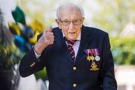
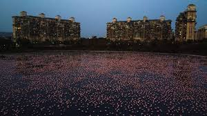
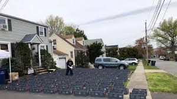

Good News Stories
|  |
|  |
|  |
Tom's 100th Birthday Walk For The NHS - At age 99, Captain Thomas Moore, a former British officer, decided to walk laps (10 per day) in his garden to raise money for the British National Health Services. He was attempting to raise 1000 pounds before his 100th birthday. On the morning of his 100th birthday the total raised by his walk passed 30 million pounds!
The Office Cast Reunite to Marry Super Fans - During 2020, many wedding plans were cancelled or postponed. After couple John and Susan sent John Krasinski a video of John's proposal to Susan, Krasinski got a crazy idea. Krasinski became an ordained minister so that he could officiate their zoom wedding. Then he enlisted his former "The Office" cast to help him recreate a famous "The Office" scene for the wedding couple.
Mumbai Flamingos Create a Sea of Pink - With less people out and about due to lockdowns in India, a more peaceful environment has been created for flamingos who are always looking for a place to obtain food. There has been a 25% increase in the number of birds migrating to the Mumbai suburbs this year.
NJ Teacher Helps Feed Students' Families - After realizing many of his students were lacking adequate meals due to their parents loss of jobs from the pandemic, culinary teacher Kelly Carroll created an at-home food bank with his wife. Within weeks of handing out food to members of his community, Carroll raised thousands of dollars in donations and is currently providing to 200 families weekly.